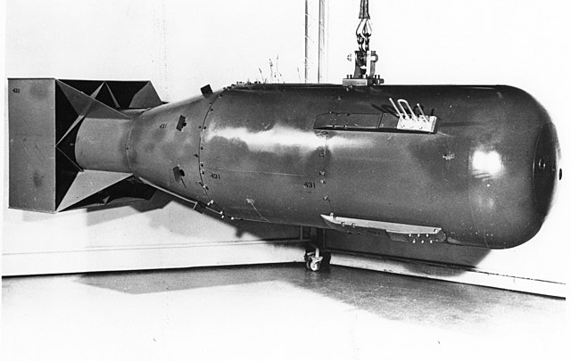

United States of America
Pearl Harbour

Japan wanted to neutralize the American Pacific Fleet, because in order to expand their country, they wanted to capture more islands. The main Pacific fleet was on Pearl Harbour, so they decided to attack it. On December 7, 1941, the Japanese attacked the US navy base on Pearl Harbour, killing over 2,000 Americans. The attack infuriated the American government, and on December 8, 1941, the day after the attack, the US formally declared war on the Empire of Japan.
Courtesy of MartinKassem, Wikimedia Commons, CC0
Invasion of Italy
On September 3, 1943, American troops landed in Italy, and began taking the country. However, since many Italians had relations with the Americans, they did not have a good spirit to fight. In an operation known as Operation Axis, German soldiers took guns from Italian soldiers to fight the American and British armies.
D-Day
On June 6, 1944, American paratroopers landed in France, and secured target areas and bridges. Then, thousands of American troops landed on the beaches of Utah and Omaha in the largest invasion by sea in history. It was one of the bloodiest battles in the war.
The Atomic Bomb

During the war, the US had started making a bomb. Not any bomb, but a bomb strong enough to reduce an entire city to rubble. Under the supervision of J. Robert Oppenheimer, the bomb was created, and on July 16, 1945, the first successful test happened. The US then used the bomb twice on Japan-on August 6, 1945, it was dropped on Hiroshima, and on August 9, 1945, it was dropped on Nagasaki. This forced Japan to surrender.
Courtesy of US Government DOD and/or DOE photograph, Wikimedia Commons, CC0